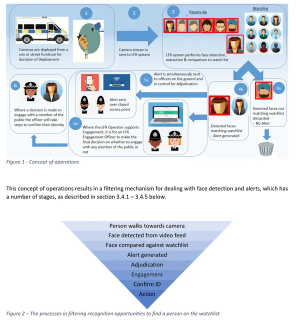
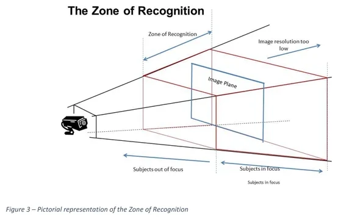
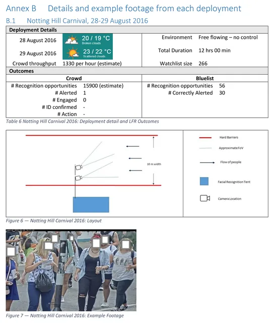
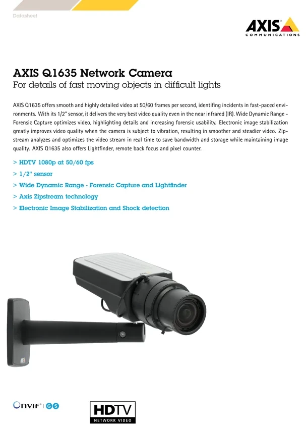

Fig. 1 Concept of operations and the filtering of recognition opportunities
Source: Metropolitan Police Service Live Facial Recognition Trials (NPL report, Feb 2020), p. 9Feb 2020Illustration

Fig. 2 The Zone of Recognition
Source: Metropolitan Police Service Live Facial Recognition Trials (NPL report, Feb 2020), p. 10Feb 2020Illustration

Fig. 3 Example of data collected per deployment (Romford)
Source: Metropolitan Police Service Live Facial Recognition Trials (NPL report, Feb 2020), p. 13Feb 2020Illustration

Fig. 4 Notting Hill Carnival, 28-29 August 2016: deployment sheet
Source: Metropolitan Police Service Live Facial Recognition Trials (NPL report, Feb 2020), p. 30Feb 2020Illustration

Fig. 5 Notting Hill Carnival, 27-28 August 2017: deployment sheet
Source: Metropolitan Police Service Live Facial Recognition Trials (NPL report, Feb 2020), p. 31Feb 2020Illustration
